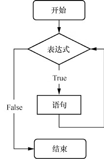
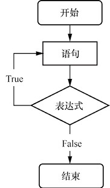

首页 > 编程笔记
C# while和do while循环的用法
循环表示重复执行某种操作。在 C# 中，常用的循环有 while 循环、do…while 循环和 for 循环。另外，各种循环之间还可以嵌套使用，并且可以通过设置条件来跳出循环。
本文我们来了解 while 循环和 do while 循环。
循环每次都是执行完语句后回到表达式处重新开始判断，重新计算表达式的值。
C# while 循环的流程图如图1所示。
【示例1】使用 while 循环实现 1 到 100 的累加，代码如下：
程序运行结果如下：
1到100的累加结果是5050
造成这种情况的原因是当 while 语句循环体中的语句大于一条时，需要把循环体放在大括号
对于下面的代码，则没有对循环变量 iNum 递增的过程，于是每次进入循环时，iNum 的值都是1，从而形成死循环，永远不会执行后面的语句。
do…while 循环的特点是先执行循环体，再判断循环条件，其语法格式如下：
do 与 while 之间的语句称为循环体，该语句是用大括号
但值得注意的是，do...while 语句后一定要有分号
do…while 循环的流程图如图2所示。
从图2中可以看出，当程序运行到 do…while 时，会先执行一次循环体的内容，然后判断循环条件；当循环条件为 True 的时候，重新返回执行循环体的内容；如此反复，直到循环条件为 False，循环结束，程序执行 do…while 循环后面的语句。
【示例2】使用 do…while 循环编写程序实现 1 到 100 的累加，代码如下：
具体来说，使用 while 语句时，如果条件不成立，则循环体一次都不会执行；而如果使用 do…while 语句，即使条件不成立，程序也至少会执行一次循环体。
本文我们来了解 while 循环和 do while 循环。
C# while 循环
while 循环用来实现“当型”循环结构，它的语法格式如下：
while(表达式)
{
语句
}
“表达式”一般是一个关系表达式或一个逻辑表达式，表达式的值应该是一个逻辑值：真或假（True 或 False）。当表达式的值为 True 时，开始循环执行语句；当表达式的值为 False时，退出循环，执行循环外的下一条语句。循环每次都是执行完语句后回到表达式处重新开始判断，重新计算表达式的值。
C# while 循环的流程图如图1所示。

图1：C# while 循环的流程图
图1：C# while 循环的流程图
【示例1】使用 while 循环实现 1 到 100 的累加，代码如下：
static void Main(string[] args)
{
int iNum = 1; //iNum从1到100递增
int iSum = 0; //记录每次累加后的结果
while (iNum <= 100) //iNum <= 100 是循环条件
{
iSum += iNum; //把每次的iNum的值累加到上次累加的结果中
iNum++; //每次循环iNum的值加1
}
//输出结果
Console.WriteLine("1到100的累加结果是" + iSum);
Console.ReadLine();
}
代码注解
- 题目要求计算 1 到 100 的累加结果，那么需要先定义一个变量 iNum 作为循环条件的判定。iNum 的初始值是 1，循环条件是 iNum 必须小于等于 100。也就是只有 iNum<=100 时才进行累加操作；若 iNum＞100，则循环终止。
- 每次循环只能计算其中一次相加的结果，想要计算 100 个数字的累加值，则需要定义一个变量 iSum 来暂存每次累加的结果，并作为下一次累加操作的基数。
- iNum 的初始值是 1，要计算 1 到 100 的累加结果，需要 iNum 每次进入循环，进行累加后，iNum 的值增加 1，为下一次进入循环进行累加做准备，也同时作为循环结束的判断条件。
- 当 iNum 大于 100 时，循环结束，执行后面的输出语句。
程序运行结果如下：
1到100的累加结果是5050
常见错误
如果将【示例1】代码中 while 语句后面的大括号去掉，将代码修改成如下形式，重新编译并运行程序，会没有任何结果。造成这种情况的原因是当 while 语句循环体中的语句大于一条时，需要把循环体放在大括号
{}中，如果 while 语句后面没有大括号，则 while 循环只会循环 while 语句后的第一条语句。对于下面的代码，则没有对循环变量 iNum 递增的过程，于是每次进入循环时，iNum 的值都是1，从而形成死循环，永远不会执行后面的语句。
static void Main(string[] args)
{
int iNum = 1; //iNum从1到100递增
int iSum = 0; //记录每次累加后的结果
while (iNum <= 100) //iNum <= 100 是循环条件
iSum += iNum; //把每次的iNum的值累加到上次累加的结果中
iNum++; //每次循环iNum的值加1
Console.WriteLine("1到100的累加结果是" + iSum); //输出结果
Console.ReadLine();
}
几点注意：
- 循环体如果是多条语句，需要用大括号括起来。如果不用大括号，则循环体只包含 while 语句后的第一条语句。
- 循环体内或表达式中必须有使循环结束的条件，例如，【示例1】中的循环条件是 iNum <= 100，iNum 的初始值为 1，循环体中就用 iNum++ 来使得 iNum 的值增大，直到大于 100，使循环结束。
C# do…while 循环
有些情况下无论循环条件是否成立，循环体中的代码都要被执行一次，这时可以使用 do…while 循环。do…while 循环的特点是先执行循环体，再判断循环条件，其语法格式如下：
do
{
语句
}
while(表达式);
do 为关键字，必须与 while 配对使用。do 与 while 之间的语句称为循环体，该语句是用大括号
{}括起来的复合语句。循环语句中的表达式与 while 语句中的相同，也为关系表达式或逻辑表达式。但值得注意的是，do...while 语句后一定要有分号
;。do…while 循环的流程图如图2所示。

图2：do…while 循环的流程图
图2：do…while 循环的流程图
从图2中可以看出，当程序运行到 do…while 时，会先执行一次循环体的内容，然后判断循环条件；当循环条件为 True 的时候，重新返回执行循环体的内容；如此反复，直到循环条件为 False，循环结束，程序执行 do…while 循环后面的语句。
【示例2】使用 do…while 循环编写程序实现 1 到 100 的累加，代码如下：
static void Main(string[] args)
{
int iNum = 1; //iNum从1到100递增
int iSum = 0; //记录每次累加后的结果
do
{
iSum += iNum; //把每次的iNum值累加到上次累加的结果中
iNum++; //每次循环iNum的值加1
} while (iNum <= 100); //iNum <= 100 是循环条件
Console.WriteLine("1到100的累加结果是" + iSum); //输出结果
Console.ReadLine();
}
代码注解
上面的代码将判断条件 iNum <= 100 放到了循环体后面，这样，无论 iNum 是否满足条件，都将至少执行一次循环体。while和do…while语句的区别
C# while 语句和 do…while 语句都用来控制代码的循环，但 while 语句适用于先进行条件判断，再执行循环体的场合；而 do…while 语句则适用于先执行循环体，再进行条件判断的场合。具体来说，使用 while 语句时，如果条件不成立，则循环体一次都不会执行；而如果使用 do…while 语句，即使条件不成立，程序也至少会执行一次循环体。
关注公众号「站长严长生」，在手机上阅读所有教程，随时随地都能学习。内含一款搜索神器，免费下载全网书籍和视频。

微信扫码关注公众号